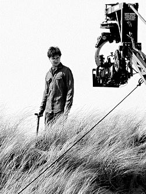

Виробництво
«Частина 1» і «Частина 2» знімались послідовно з 19 лютого 2009 по 12 червня 2010 року. Режисер Девід Єйтс описав «Частину 1» як «реалістичний»; «дорожній фільм», близький до «документального веріте»[en]. Ідея розбити початково запланований один фільм на два належить виконавчому продюсерові Лайонелу Віграму. Спочатку до пропозиції поставилися скептично, але після обговорень між Девідом Гейманом і Стівеном Кловзом розділення на частини погодили.Зовнішній вигляд будинку Мелфоїв оснований на Хардвік-холлі. Для зйомок переслідування смертежерами Гаррі та Геґріда на мотоциклі використали дартфордську переправу через Темзу. Декорації для сцен на природі будувалися прямо в лісах.
Деніел Редкліфф під час зйомок фінальних сцен фільму у Пембрукширі.
Музика
У січні 2010 на пост композитора Єйтс затвердив Александра Деспла. Він створював музику протягом літа 2010 разом із Лондонським симфонічним оркестром. Деспла зазначив, що використовував «Тему Гедвіґи», створену Джоном Вільямсом, у своїх композиціях. Музичний супровід Александр Деспла завершив у вересні. Оркестровка була розпочата 14 серпня 2010 із Конрадом Поупом (оркестратор перших трьох фільмів Поттеріани) і за участі Деспла. У сцені танцю Гаррі та Герміони звучить пісня «O Children» гурту Nick Cave and the Bad Seeds.
Музика до трейлерів «Смертельних реліквій» включає дві композиції Brand X. Перша, «Секрет Чаклуна» (англ. the Sorcerer's Secret), звучить у перших трьох тизерах фільму, а друга — в основному трейлері до обох частин. У третьому трейлері до «Частини 1», використовуються три нові пісні: Amphibious Zoo — «Привид Війни» (Ghost Of War), Position Music — «Небезпека» (Menace), і заключна від Immediate Music — «Кінець днів» (англ. The End Of Days).
Будинок Поттерів у Ґодриковій Долині.
Касові збори
Протягом нічних передпоказів «Гаррі Поттер і Смертельні реліквії: Частина 1» зібрав 24 млн $, побивши попередній рекорд франшизи, встановлений фільмом «Гаррі Поттер і Напівкровний Принц», який зібрав 22,2 млн. Це також третій результат серед найкращих опівнічних показів після «Сутінки. Сага: Затемнення» та Сутінки. Сага: Молодий місяць. Стрічка побила рекорд зборів за нічні покази в IMAX, заробивши 1,4 млн $; попередній рекорд — 1 млн $ — належав фільму «Сутінки. Сага: Затемнення». Усі рекорди пізніше було перевершено сиквелом картини.
США
У США картина у перший день досягла відмітки 61,7 млн $, що на той час було шостим найкращим результатом. Попередній рекорд «Поттеріани» (58,2 млн $) належав «Напівкровному Принцу»; пізніше цей показник було перевершено заключною частиною. За прем'єрний вік-енд стрічка заробила 125 мільйонів доларів, що було найкращою відміткою франшизи до виходу у прокат «Смертельних реліквій: Частина 2». На той момент фільм зайняв друге місце серед найкращих зборів за прем'єрні вихідні у листопаді та другу позицію серед найкращих зборів у прем'єрний вік-енд у США та Канаді за 2010 рік (після фільму «Залізна людина 2»). Фільм залишався на першому місці прокату протягом двох тижнів.
Світові
У Великій Британії, Ірландії та Мальті, фільм побив рекорди приросту зборів першої п'ятниці (5,9 млн £), суботи (6,6 млн £) і неділі брутто (5,7 млн £). Також стрічка встановила рекорд найбільшого прибутку за один день (6,6 млн £) і найбільших зборів за перші три дні прокату (18 319 721 £), перегнавши «Квант милосердя», що зібрав 15,4 млн £. Картина зібрала 86 020 929 $,[23] ставши другою найкасовішою 2010 року у Великій Британії, після «Історії іграшок 3».
Україна
За прем'єрний вік-енд в Україні «Гаррі Поттер і Смертельні реліквії: Частина 1» заробив 1 400 650 $ (11 137 969 ₴), що на даний момент є 15 найкращим результатом в українському прокаті за весь час і другим найвищим показником франшизи, поступаючись лише фільму «Гаррі Поттер і Смертельні реліквії: Частина 2» (1 437 500 $). За другий тиждень прокату (25—28 листопада) збори картини впали на 55 % і досягли 630 870 $ (4 961 162 ₴).[30] Фільм протримався в лідерах українського прокату три тижні. Загальні збори стрічки склали 2 929 841 $, зайнявши третю позицію найкасовіших фільмів українського прокату за 2010 рік
Критика
На сайті Rotten Tomatoes кінофільм отримав оцінку в 78 % (203 схвальних відгуків і 56 несхвальних). На сайті Metacritic рейтинг фільму становить 65 зі 100. На IMDb рейтинг становить 7,7 з 10.